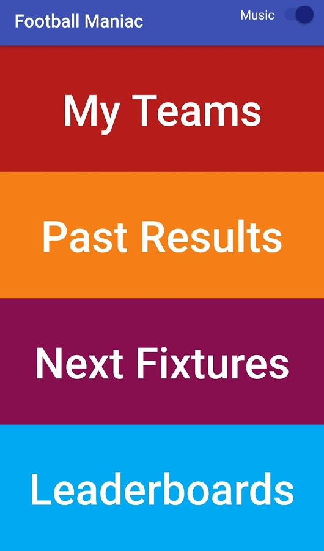
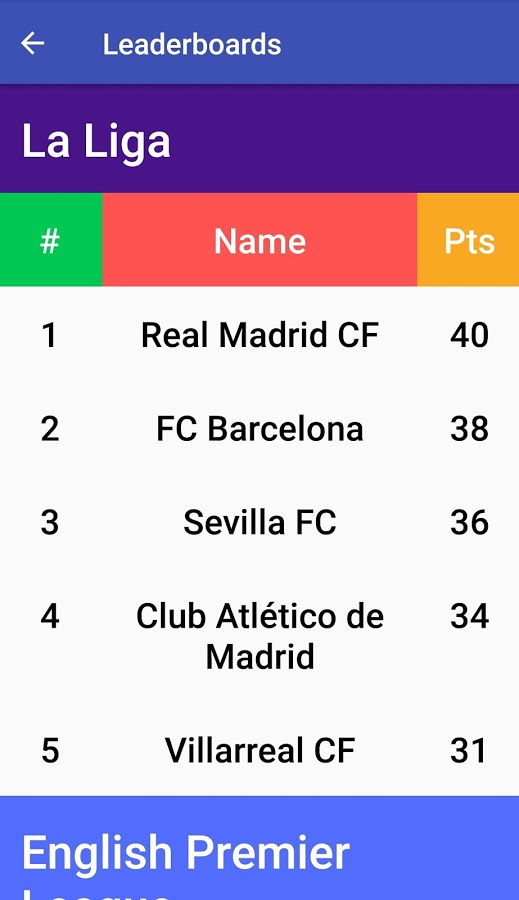
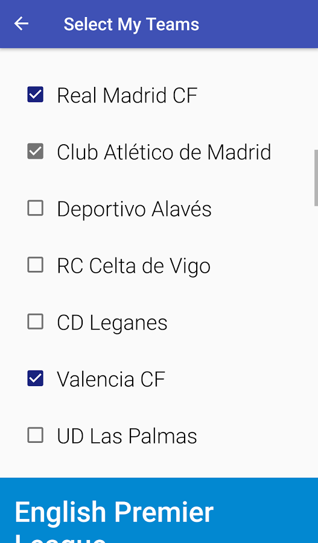
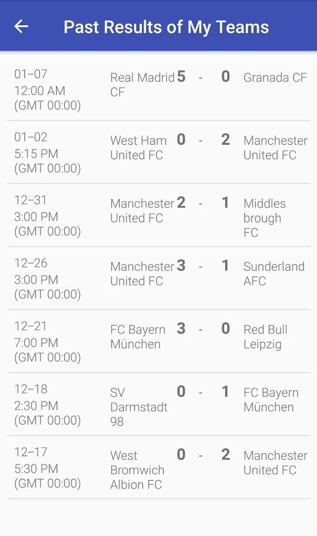

github.com/farhanMRahman/FootballManiac
This is a RESTful Android app which displays recent past results and future fixtures of prime European soccer teams. There is also option for customizing user's favorite team so that they can see only their favorite teams' data. It scrapes JSON data from an open web API.
Football maniac is the perfect app for the absolute fanatics of football/soccer. It displays recent past results of the major European clubs from over 10 different European leagues and future fixtures of them. It allows the user to customize their favorite teams and only see their favorite teams' scores and fixtures. It also shows the current Leaderboards of La Liga, English Premiere League and Bundesliga. It has magnificent background sound service which surely improves user experience. Its user interface is basic and simple. Not having too many unnecessary features like traditional apps makes it more useful and user-friendly.
This is the perfect app for those fans who didn't have time to watch the games or missed those somehow, but want to check on their favorite teams' recent results, future fixtures or current position on the point table. It's fast, simple and easy to use.
Go football! Go football fans!
- Used ArrayAdapter to recycle views int ListView
- Used a Service for the background music
- Scraped JSON data showed them in appropriate places
- Used HashMap to keep record of user's favorite teams with constant lookup runtime
- Used SharedPreferrences to save user's preferrences of favorite teams
- Handled special cases, for example, when there is no internet conncetion in the phone etc.
Download Football Maniac
Your phone's Android version must be 4.0.3 or up;
to run this, go to the Play Store link above and download it




These are the main classes;
for the full code, go to the Github link above
MainActivity.java
main activity
MyTeamsActivity
past results and future fixtures of user's favorite teams activity
Leaderboards
current leaderboards of the three leagues
MusicService
a Service that handles the background music
QueryUtils
has all necessary methods for fetching data from the open Web API
makes an HTTP request, fetches data as JSON format, returns them as List to different classes
Team
a generic Team class for making every team object which stores information about them
SelectMyTeams
the activity that handles user's favorite teams using CheckBox and HashMap
selecting and retrieving favorite team data runs in O(1) runtime
PastResultsActivity
shows the scores of past 30 days in major leagues
PastLoader
an AsynTaskLoader that communicates with QueryUtils and loads data in the background
PastResultAdapter
an ArrayAdapter that recycles data for efficiency and shows them in ListView